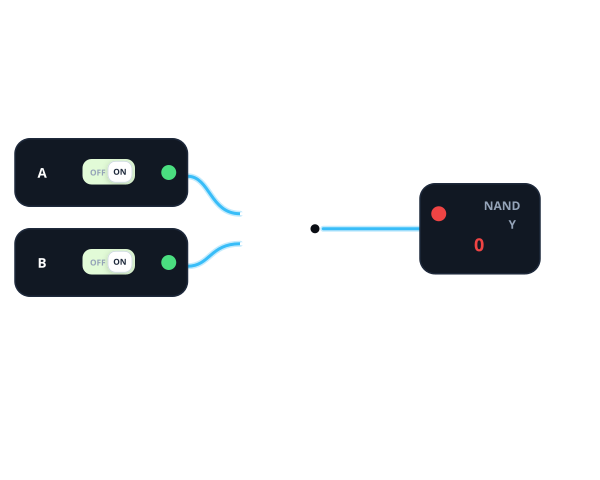
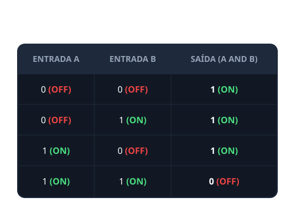
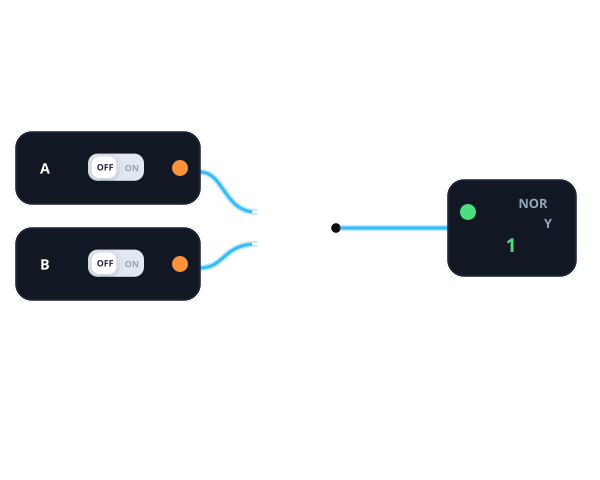
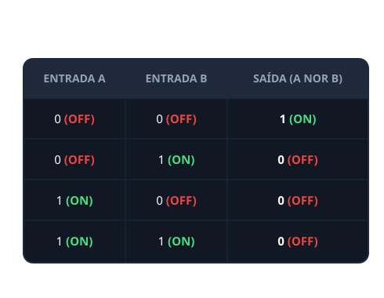
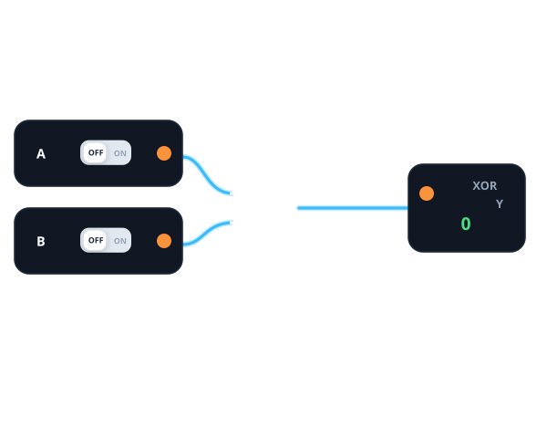
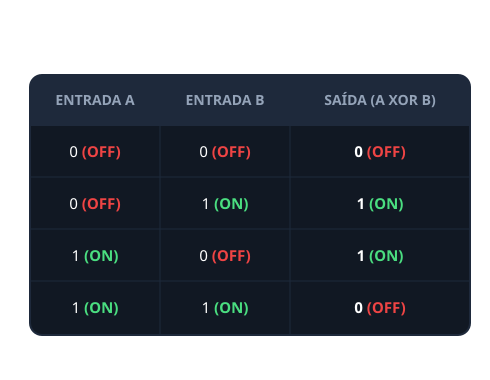
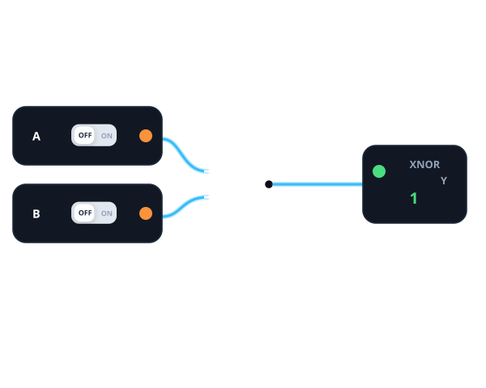
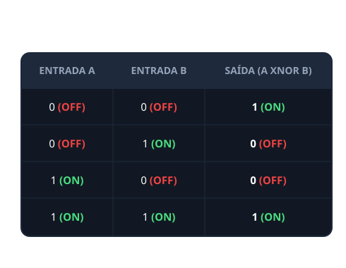
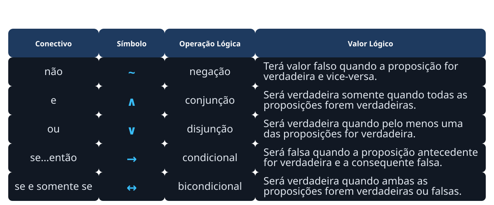
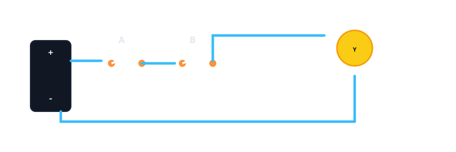

Conteúdo da LogicSim
Selecione umas das apções abaixo para aprender os conteúdos da aplicação.
Selecione umas das apções abaixo para aprender os conteúdos da aplicação.

A saída é 1 quando todos os valores de entrada forem 1.

A saída é 1 quando pelo menos uma das entradas for 1.

A saída pode receber sinais positivos que viram negativo.

A saída é 0 somente quando todas as entradas forem 1.

A saída é 1 somente quando todas as entradas forem 0.

A saída é 1 somente quando as entradas são diferetes.

A saída é 1 quando as entradas são iguais e 0 quando são diferente.

Uma de lista todas as combinações possíveis de entrada e saídas.

Uma ligação direta e exclusiva entre dois dispositivos para trocar de dados.
É um circuito digital básico que realiza a multiplicação lógica. Ela emite um sinal verdadeiro (1) apenas quando todas as suas entradas forem verdadeiras. Se qualquer uma das entradas for falsa (0), a saída será obrigatoriamente falsa. Suponha que você vai ligar o computador E também vai ligar o monitor o A será igual a 1 pois você foi ligar o computador e B será também 1 pois você ligou o monitor então nesse caso a nossa saída será 1 e não zero pois ambas condições tiveram saída 1. Confira exemplos abaixo:


Nessas imagem vemos que tem algo em incomum, ambas as entradas tem valor de 1 com A e B ou em termos técnicos A · B fazendo sua multiplicação com a saída sendo 1, E isso mostrando na simulação com a porta AND e também mostrando na tabela verdade e no circuito de comutação mas todas as imagem mesmo com regras diferentes chegam na mesma saída, Não importa quantas entradas terá na porta lógica mas para ser AND todas devem está ligadas. Clique na imagem do circuito para ir direito ao simulador com o exemplo.
A porta OR é um circuito digital básico que realiza a soma lógica. Ela emite um sinal verdadeiro (1) se pelo menos uma de suas entradas for verdadeira. A saída só será falsa (0) se todas as entradas forem obrigatoriamente falsas.Imagine a seguinte situação: para uma lâmpada acender, você pode apertar o interruptor A OU o interruptor B. Se você apertar o interruptor A (A = 1) e deixar o B desligado (B = 0), a lâmpada ainda assim irá acender (Saída = 1). Confira exemplos abaixo:


Nessas imagem vemos que tem algo em incomum, uma das entradas tem valor de 1 com A OU B ou em termos técnicos A + B fazendo sua multiplicação com a saída sendo 1, E isso mostrando na simulação com a porta OR e também mostrando na tabela verdade e no circuito de comutação mas todas as imagem mesmo com regras diferentes chegam na mesma saída, Não importa quantas entradas estiverem ligadas ser pelo menos uma estive ligada a saída será 1. Clique na imagem do circuito para ir direito ao simulador com o exemplo.
A porta NOT é um circuito digital básico que realiza a negação lógica. Ela possui apenas uma entrada e uma saída. Seu funcionamento é simples: a saída sempre apresenta o valor oposto ao da entrada. Assim, quando a entrada for verdadeira (1), a saída será falsa (0). Da mesma forma, quando a entrada for falsa (0), a saída será verdadeira (1). Imagine a seguinte situação: uma lâmpada é controlada por um sistema que funciona de forma invertida. Se o interruptor estiver desligado (Entrada = 0), a lâmpada acende (Saída = 1). Porém, ao ligar o interruptor (Entrada = 1), a lâmpada apaga (Saída = 0). Confira os exemplos abaixo:


Nessas imagem as entradas manda sinal(A) de 1 ou 0 mas no NOT ele faz a negação(A') dessas entradas ou qualquer outra entrada, E isso mostrando na simulação com a porta NOT e também mostrando na tabela verdade e no circuito de comutação mas todas as imagem mesmo com regras diferentes chegam na mesma saída, Não importa quantas entradas estiverem ligadas, O NOT pega aquela entrada 1 e transformar em 0 ou contrário. Clique na imagem do circuito para ir direito ao simulador com o exemplo.
A porta NAND é um circuito digital básico que realiza a operação lógica de negação da porta AND. Ela pode possuir duas ou mais entradas e apenas uma saída. Seu funcionamento é simples: a saída será falsa (0) somente quando todas as entradas forem verdadeiras (1). Em qualquer outra combinação de entradas, a saída será verdadeira (1). Imagine a seguinte situação: uma lâmpada é controlada por um sistema de segurança que utiliza uma porta NAND com dois interruptores. A lâmpada permanece acesa (Saída = 1) enquanto pelo menos um dos interruptores estiver desligado (Entrada = 0). Porém, quando os dois interruptores são ligados ao mesmo tempo (Entradas = 1 e 1), a lâmpada apaga (Saída = 0).Confira os exemplos abaixo:


Nas imagem do circuito e da tabela verdade mostra que a porta lógica NAND é o completo oposto da porta AND e com regras parecidas da porta lógica OR. Clique na imagem do circuito para ir direito ao simulador com o exemplo.
A porta NOR é um circuito digital básico que realiza a operação lógica de negação da porta OR. Ela pode possuir duas ou mais entradas e apenas uma saída. Seu funcionamento é simples: a saída será verdadeira (1) somente quando todas as entradas forem falsas (0). Se pelo menos uma das entradas for verdadeira (1), a saída será falsa (0). Imagine a seguinte situação: uma lâmpada é controlada por um sistema de segurança que utiliza uma porta NOR com dois interruptores. A lâmpada permanece acesa (Saída = 1) apenas quando os dois interruptores estão desligados (Entradas = 0 e 0). Porém, se qualquer um dos interruptores for ligado (Entrada = 1), a lâmpada apaga (Saída = 0).Confira os exemplos abaixo:


Diferente do OR, a porta lógica NOR só aceita entradas falsas(0) e nenhuma verdadeira, Confira a tabela verdade da OR e da AND que você irá ver regras diferentes que a NOR usa. Clique na imagem do circuito para ir direito ao simulador com o exemplo.
A porta XOR (OU exclusivo) é um circuito digital básico que realiza uma operação lógica na qual a saída será verdadeira (1) somente quando as entradas forem diferentes entre si. Ela pode possuir duas ou mais entradas e apenas uma saída. Seu funcionamento é simples: a saída será 1 quando houver um número ímpar de entradas em nível lógico alto (1), e será 0 quando todas as entradas forem iguais. Imagine a seguinte situação: uma lâmpada é controlada por um sistema de iluminação que utiliza uma porta XOR com dois interruptores. A lâmpada permanece acesa (Saída = 1) quando apenas um dos interruptores está ligado. Porém, se ambos estiverem na mesma posição (os dois desligados ou os dois ligados), a lâmpada permanece apagada (Saída = 0). Confira os exemplos abaixo:


A Porta XOR tem duas regras, como foi dito acima. O XOR não aceita valores iguais entre as entradas, pois sua saída depende da paridade dos valores lógicos. Em um circuito com duas entradas, a saída será 1 quando as entradas forem diferentes e 0 quando forem iguais.Observando a tabela verdade, percebe-se que a saída é 1 apenas quando há um número ímpar de entradas em nível lógico alto (1), pois a XOR depende da paridade. Isso significa que, por exemplo, em um circuito com quatro entradas, se três delas forem 1 e uma for 0, a saída será 1, pois 1 + 1 + 1 = 3, e 3 é um número ímpar.Clique na imagem do circuito para ser direcionado diretamente ao simulador com o exemplo.
A porta XNOR (OU exclusivo negado) é um circuito digital básico que realiza uma operação lógica na qual a saída será verdadeira (1) somente quando as entradas forem iguais entre si. Ela pode possuir duas ou mais entradas e apenas uma saída. Seu funcionamento é simples: a saída será 1 quando houver um número par de entradas em nível lógico alto (1) e será 0 quando houver um número ímpar de entradas em nível lógico alto (1). Imagine a seguinte situação: um sistema de segurança utiliza uma porta XNOR para comparar dois códigos digitais. A saída será 1 quando os dois códigos comparados forem iguais, indicando que a informação recebida corresponde à informação esperada. Porém, se houver qualquer diferença entre os códigos, a saída será 0, sinalizando uma incompatibilidade. Confira os exemplos abaixo:


A porta XNOR possui uma característica semelhante à porta AND, pois sua saída é ativada quando as entradas apresentam o mesmo valor lógico. No entanto, diferentemente da AND, a XNOR também produz saída igual a 1 quando todas as entradas estão em nível lógico baixo (0).Outra forma de entender a porta XNOR é observando sua relação com a porta XOR. Enquanto a XOR produz saída 1 quando há uma quantidade ímpar de entradas em nível lógico alto (1), a XNOR produz saída 1 quando há uma quantidade par de entradas em nível lógico alto. Por exemplo, em uma porta XNOR com quatro entradas iguais a 1 (1 + 1 + 1 + 1), o total de entradas em nível alto é 4, que é um número par; portanto, a saída será 1. Clique na imagem do circuito para ser direcionado diretamente ao simulador com o exemplo.
A tabela-verdade é uma ferramenta matemática e lógica usada para determinar o valor lógico (Verdadeiro ou Falso) de proposições compostas, mapeando todas as combinações possíveis de suas entradas. Ela é a base para o raciocínio lógico formal, circuitos digitais e algoritmos.

A tabela-verdade é uma forma de representar todas as combinações possíveis de entradas de uma operação lógica e o resultado correspondente de cada uma delas. Ela é usada para analisar o comportamento de portas lógica,Para montá-la, primeiro é necessário observar quantas entradas o sistema possui, pois isso determina a quantidade de combinações possíveis. Por exemplo, com duas entradas (A e B), existem quatro combinações: 0 e 0, 0 e 1, 1 e 0, e 1 e 1. Depois de listar todas essas possibilidades, aplica-se a operação lógica escolhida em cada linha para encontrar o valor da saída.Assim, cada linha da tabela mostra um caso diferente de entrada e seu respectivo resultado, permitindo entender exatamente como o circuito se comporta em todas as situações possíveis.
Um circuito de comutação é um tipo de circuito eletrônico ou digital que tem a função de controlar o fluxo de sinais elétricos, alternando entre dois estados principais: ligado (1) e desligado (0).Ele funciona “comutando” (trocando) entre esses estados de acordo com as entradas recebidas, sendo muito usado em sistemas digitais para realizar decisões lógicas, como em portas lógicas (AND, OR, XOR etc.), memórias e controladores.Na prática, um circuito de comutação pode ser encontrado em dispositivos que precisam ligar ou desligar algo automaticamente, como sistemas de iluminação, computadores e equipamentos eletrônicos em geral. Na página do simulador tem um botão que mostrar o circuito perfeitamente montado e funcionando.
